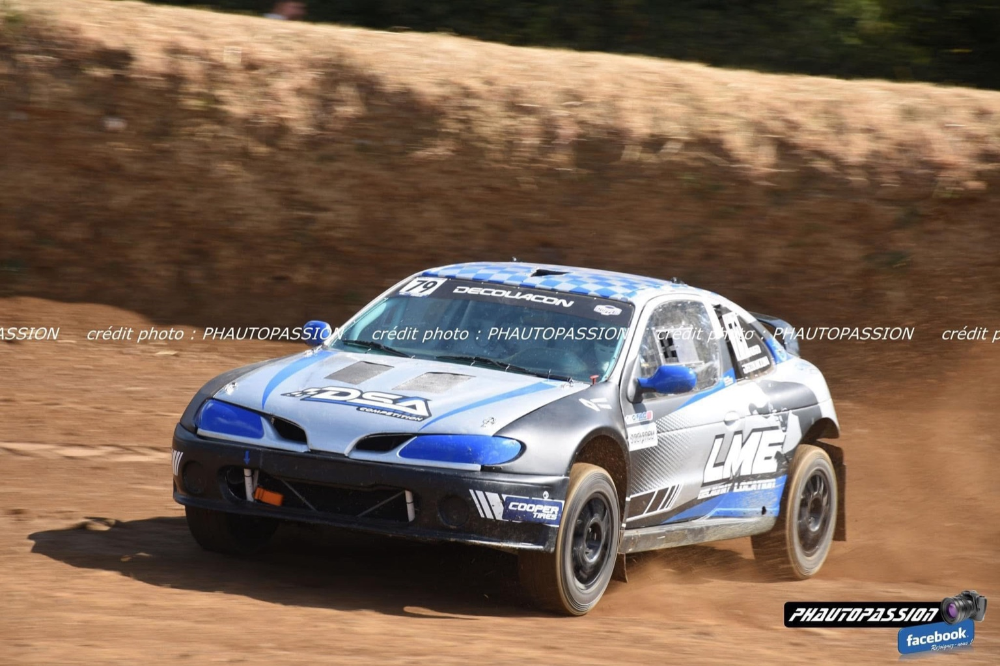

Âgé de 32 ans, Calix Decouacon est un passionné de motorisation et de compétition, évoluant en tant que pilote de rallycross.
Le Rallycross en France combine asphalte et terre pour un spectacle unique. La Division 4, pour véhicules deux roues motrices de 1600 à 2000 cm3, accueille plus de 30 pilotes à chaque manche.
Peugeot 206 F2000 — 2.0L MI16, 250 ch, 0 à 100 km/h en moins de 5,5 s, caisse renforcée, poids 1100 kg pilote inclus.
Pour 2025, l’objectif est clair : disputer la saison complète en Division 4, avec un budget estimé à 53 300 €, comprenant acquisition du véhicule, équipement, frais logistiques et engagements.
Associez votre image à un projet passionné. Sponsoring financier, en nature ou mécénat, avec visibilité voiture, équipement, réseaux et avantages fiscaux à la clé.
Calix Decouacon
37 bis rue Jean Marie Brûle, 44800 ST HERBLAIN
Tél : 06 65 79 16 95
Email : calix.decouacon@yahoo.fr